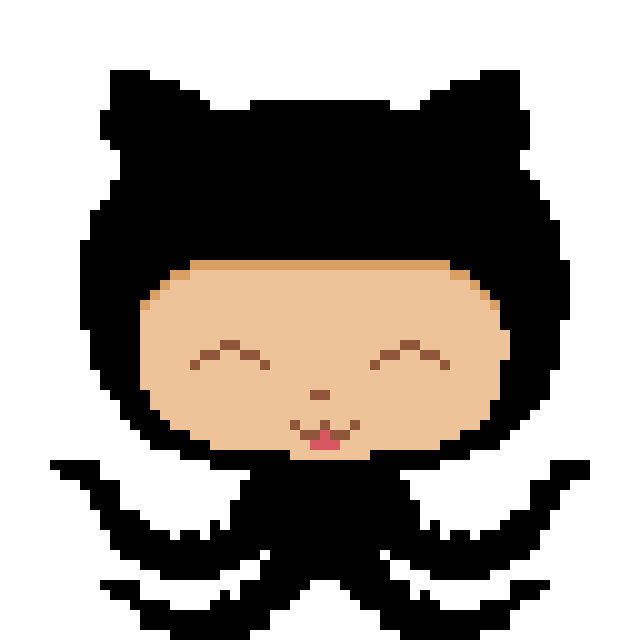

Projets
Basé sur les concepts de Jurassic Park et de Roller Coaster Tycoon, DinoParc est un jeu de société de gestion d’un parc où 2 à 4 joueurs se défient de créer un parc jurassique attirant le plus de visiteurs possibles.
En équipe de quatre, notre objectif était d'avoir un jeu multijoueur
fonctionnel sur diverses plateformes (PC et Mobile). Ce projet a été ma première
experience un moteur de jeu.
² Développement sur Unity C# :
Gestion du board (plateau de jeu)
Instances de jeu (tuiles, dinosaures, cages, kiosques)
Ensuite, nous avons dû développé sur dans le cadre d'un cours d'informatique mobile.
Développement sur Android Studio Java Android :
Version Android du jeu
Serveur HTTP et Version HTML du jeu
Communication client-serveur via sockets en NodeJS et en Socket.IO (JavaScript et Java)
DINOPARC
Développé dans le cadre d'un cours de Réalisation de jeu, en collaboration avec l'école NAD, Bouncy Berry a été notre première expérience avec l'engin.
Bouncy Berry est un jeu platformer en 2.5D, dédié aux enfants de 8 ans et plus,
sur plateforme mobile. Le joueur incarne un enfant, accompagné d’un monstre
qu'il doit faire maigrir et grossir un monstre afin de passer au travers
d’obstacles et d’ainsi compléter les niveaux.
Développement sur Unreal Engine Blueprint :
Programmation Gameplay
Programmation UI (menus, HUD)
Développé pour un cours de Gestion de Projets en équipe de cinq programmeurs de l'UQAC, GitDefender est un platformer 2D inspiré du logiciel de gestion Git.
Le joueur incarne le chat-pieuvre de GitHub et doit protéger son répertoire contre des conflits
ou/et des bugs. Il peut placer des commandes git (branch, add, pull, push...)
qui servent de tourrelles de défense. Le protagoniste doit alors récuperer
des ressources (lignes de codes, données...) pour fabriquer ces tourrelles. Si son
répertoire est trop corrompu alors il perd la partie!
Développement sur Unity C# :
Concept Art (animations, characters...)
Programmation I.U.

Réalisé dans le cadre du cours d'Atelier en Réalisation de jeu vidéo, Incowming est un party-game avec une ambiance de ferme. J'ai travaillé dans une équipe perfomante et géniale de huit programmeurs de l'UQAC et
Développement sur Unreal Engine C++ Blueprint :
Programmation Gameplay
Programmation V.R.
Programmation Outils
Accompagné de trois autres programmeurs de l'UQAC, de quatre artistes du centre NAD et de deux sourds designers indépendants, je suis fier d'avoir participé au Concours universitaire Ubisoft édition 2017. Nous avons développé notre jeu en 10 semaines intenses en travail et en énergie pour aboutir à un prototype amazing dont je suis très fier : UNCHAINED.
Le thème du concours était : JOUE AVEC LE TEMPS et le mandat :
Fournir une expérience connectée pour deux joueurs, online ou locale (LAN).
Utiliser le mode multijoueur (compétitif et/ou coop).
Présenter un design de jeu asymétrique offrant des expériences différentes.
Inclure des interactions entre les joueurs se déroulant en temps réel, fournissant du feedback et ayant un impact sur l’expérience des joueurs.
Inclure au moins un élément d’intelligence artificielle dans le gameplay qui peut nuire et/ou aider les joueurs.
Présenter deux éléments de concept art (dans le prototype ou à part).
Comprendre une mécanique de jeu ayant un lien avec le temps.
Notre concept oppose un Monstre en Hack'n Slash et un Dieu en Strategy Game (style RTS).
Les deux joueurs ont des objectifs différents, mais ils convoitent la même ressource :
des cristaux. Le Dieu accélère le temps alors que le Monstre le ralentit.
Développement sur Unreal Engine C++ Blueprint :
Programmation Gameplay
Programmation I.A.
Programmation Outils
Footage du gameplay du Monstre
Footage du gameplay du Dieu
Concept Art par Cédric Moncheaux

Concept Art par Nina Marchand
Game Jams
Il s'agit de ma première participation dans un GameJam; le WonderJam UQAC, édition Hiver 2016. J'ai collaboré avec une merveilleuse équipe consistué d'experimentés et de "newbie" comme moi. Ce fut une expérience motivante et assez intense.
Le thème était : CONNEXION et les styles imposés : Exploration, Action
Nous sommes partis sur l'idée d'une soeur aidant son petit frère pour
explorer son école à la recherche des réponses d'un examen et affronter les
professeurs mécontents. Il controllait alors les deux protagonistes sans éloigner l'un de l'autre.
Développement sur Unity C# :
Programmation Gameplay
Footage du gameplay
Nous avons obtenu le prix non officiel du jeu le plus BadAss grâce à la présence d'une intelligence artificielle, de deux styles de gameplay différents, des niveaux de difficulté, etc.
Il s'agit de ma deuxième participation dans au WonderJam UQAC, édition Automne 2016. Avec à peu près la même équipe que l'édition précédante, plus deux nouveaux "newbie".
Le thème était : LE JUGEMENT et les styles imposés : Gestion, Compétition multijoueur
Notre jeu est un remake du jeu Game Dev Tycoon à la façon GameJam, d'où
le titre WonderJam Tycoon. Deux joueurs s'affrontent lors du GameJam de
la société TTSoft, chacun dispose d'une équipe diversifiée et représentant
les domaines du jeu. Ils doivent ainsi satisfaire le plus possible
les dieux de ses domaines.
Développement sur Unity C# :
Concept Art (animations, characters...)
"Légère aide" à la programmation gameplay
Nous avons obtenu le prix Coup de coeur du jury !